Lamp
A lamp that transforms from ambient glow to focused task light through a single rotation.
User Research, Ergonomics
standard hardware
working prototype
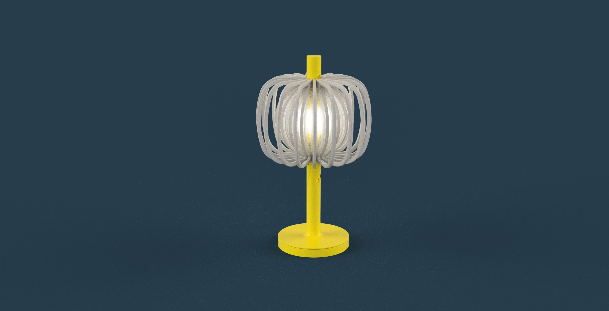
Premise
Over the summer, I wanted to step away from robotics and experience the process of designing an everyday product.
Lamp began with a simple question: how can light be redirected efficiently without relying on conventional joints? Most adjustable lamps offer a large range of motion through multiple hinges, but in practice, they are often adjusted once and left in place. I wanted to explore a more focused form of adjustability—one that felt intentional rather than mechanical.
Inspired by the Harry Potter Deluminator and its ability to move a “ball of light,” I explored a lamp that could transition between illuminating a specific task and contributing to the ambient lighting of a room. Rather than maximizing adjustability, the design uses a single, discrete interaction to redirect the light where it is needed.
This approach also supported the minimalist, Scandinavian design language I wanted to achieve. Eliminating conventional joints reduced visual clutter, potential points of failure, and the tendency toward an overly mechanical appearance.
The final design was developed with no visible fasteners and was initially prototyped entirely through 3D printing.
Focused adjustability: a lamp designed to move light, not joints.
Design Precedent
Before committing to a shade-driven approach, I studied how existing lamps control the direction and distribution of light. The designs I looked at fell into three broad approaches:
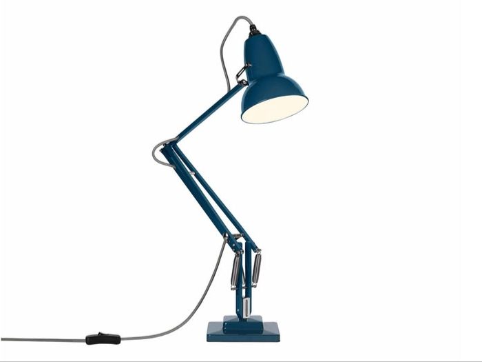
Anglepoise 1227
A counterbalanced linkage allows the user to reposition the light source across a wide range of positions.
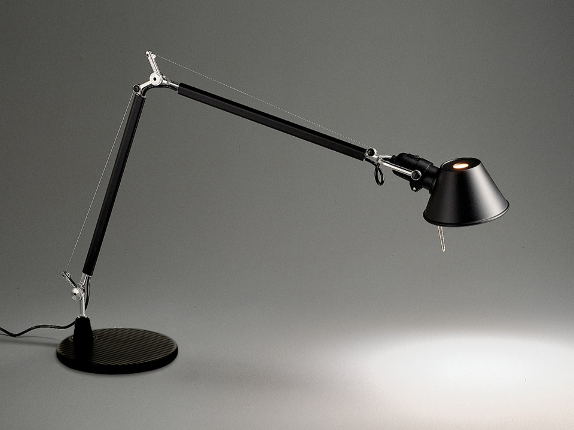
Artemide Tolomeo
A refined version of the same principle, using tension cables and internal springs to maintain position while preserving a large range of motion.
Opportunity: high adjustability, but the mechanism becomes part of the visual language.
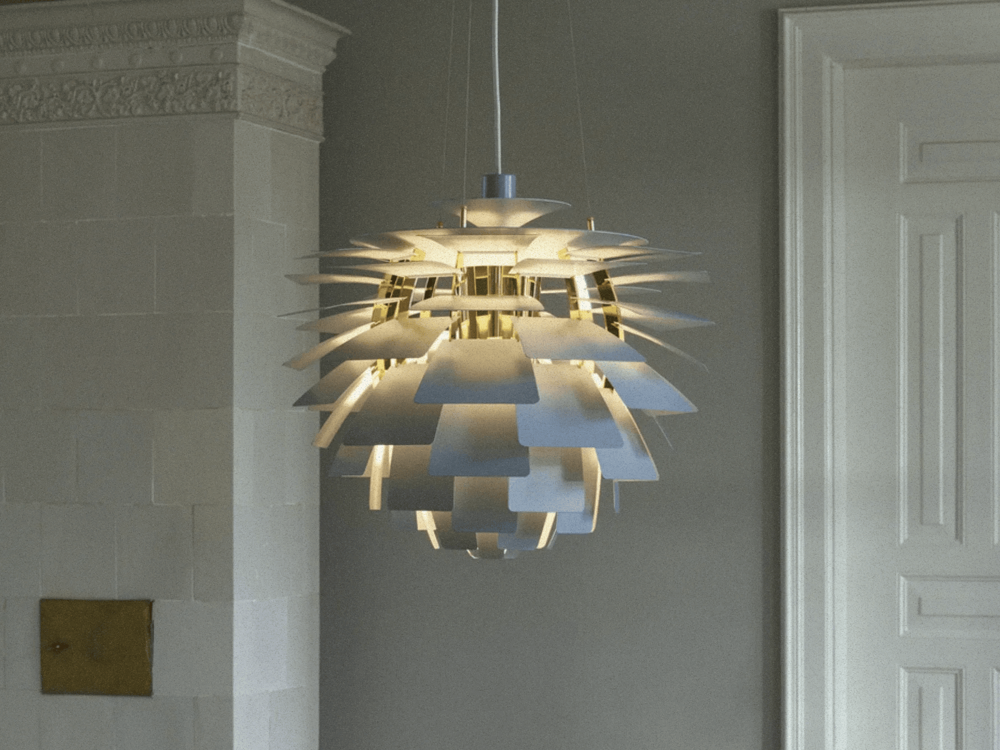
PH Artichoke
Overlapping leaves conceal the light source and control glare through geometry rather than diffusion.
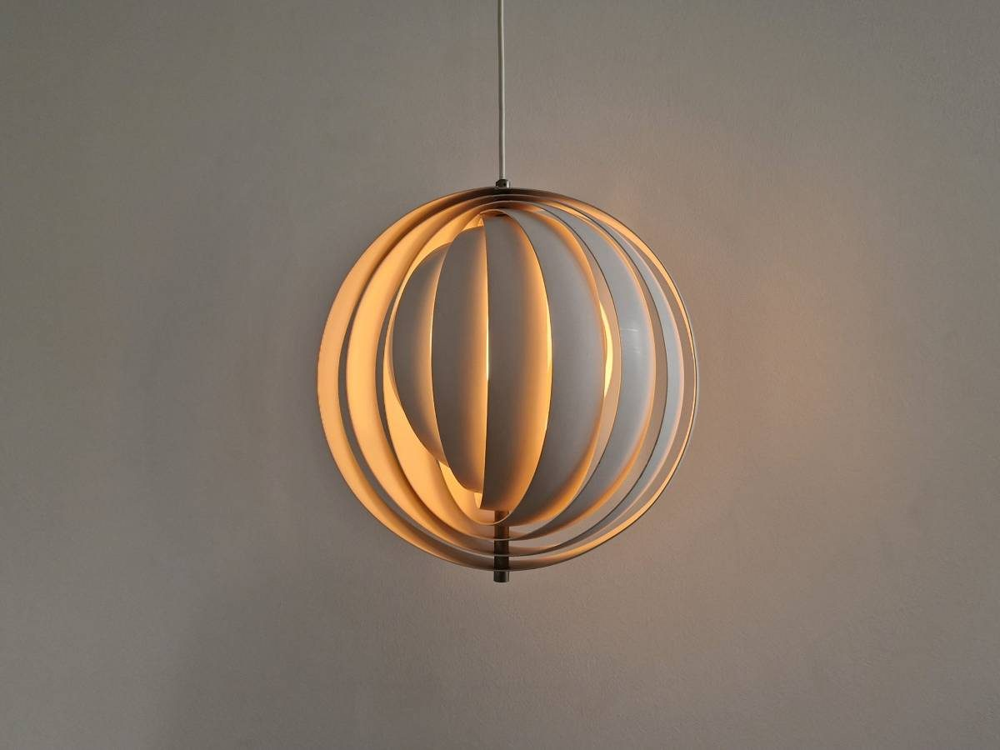
Moon
Concentric elements surround the light source, simultaneously concealing and reflecting the output.
Opportunity: controlled lighting with no moving mechanism, but the behaviour is fixed once assembled.
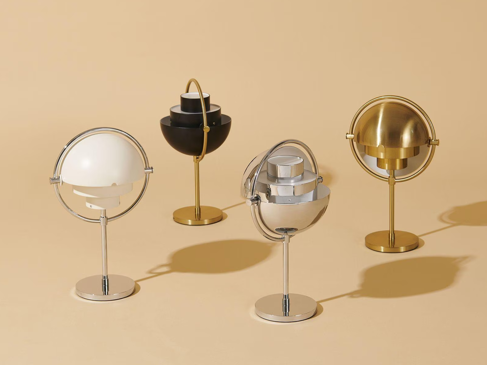
GUBI Multi-Lite
Two independently rotating shades redirect the light while the main body remains stationary.
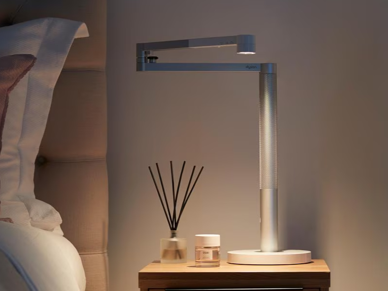
Dyson Solarcycle Morph
The optical head can be reoriented between direct and indirect lighting modes, while the fixture remains in place.
These examples suggested a more interesting direction: could the lamp change where light goes without repositioning the fixture itself?
Rather than rotating a reflector or moving an arm, I began exploring the shade as an aperture — using the overlap between two layers to determine how much light escapes and where it is directed.
Move the light, not the lamp.
Concept Development
Lamp was designed around two primary lighting states: ambient and focused task light. I used a master sketch informed by typical side-table dimensions and seated eye level to establish the lamp's proportions and explore how its height would affect the user. Rather than giving the lamp a large range of arbitrary positions, I wanted a single interaction to transition between these two states.
My first concept used a spiral track that the user could pull the light along. As the light rose, it rotated from a downward-facing task light to an upward-facing ambient light. While the concept established the desired transition, guiding the light along the track felt cumbersome and overly constrained.
I kept the idea of rising to transition between lighting modes but simplified the interaction. In the final design, rotating the lamp body causes the outer shade to rise along a helical slot relative to the fixed inner shade. The two layers contain offset openings, so their relative position controls how much light escapes.
At the lowest position, the openings are misaligned and the light source is enclosed, producing a diffuse ambient glow. As the lamp rotates upward, the openings progressively align until the highest position exposes the light source, producing a more direct, focused output.
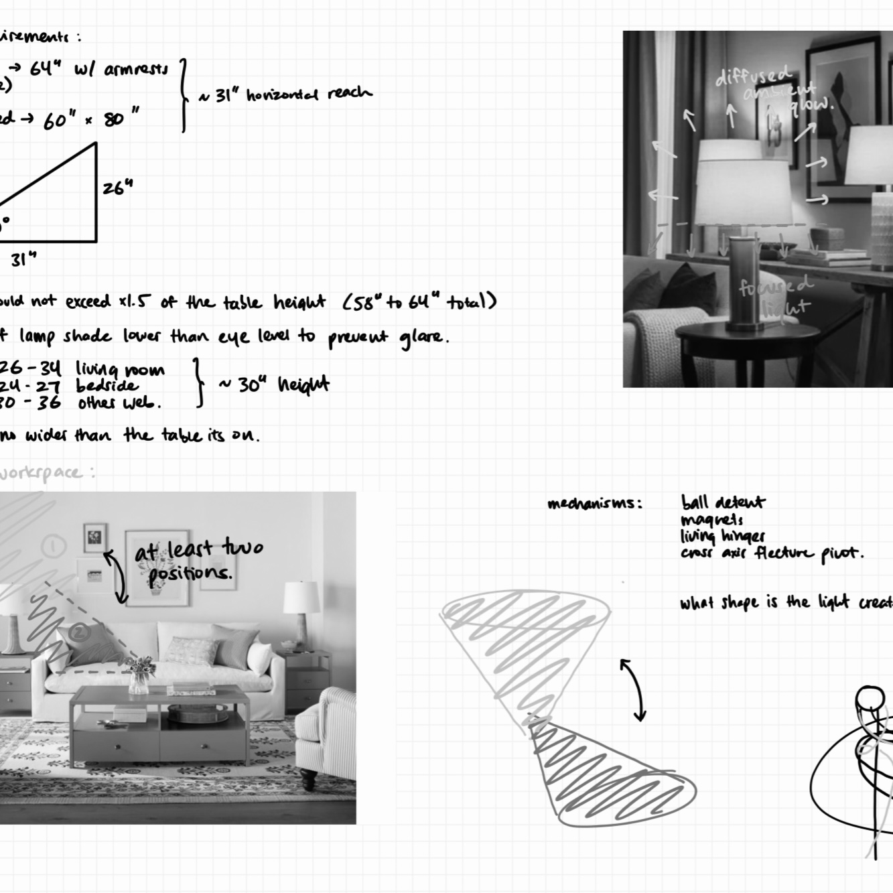
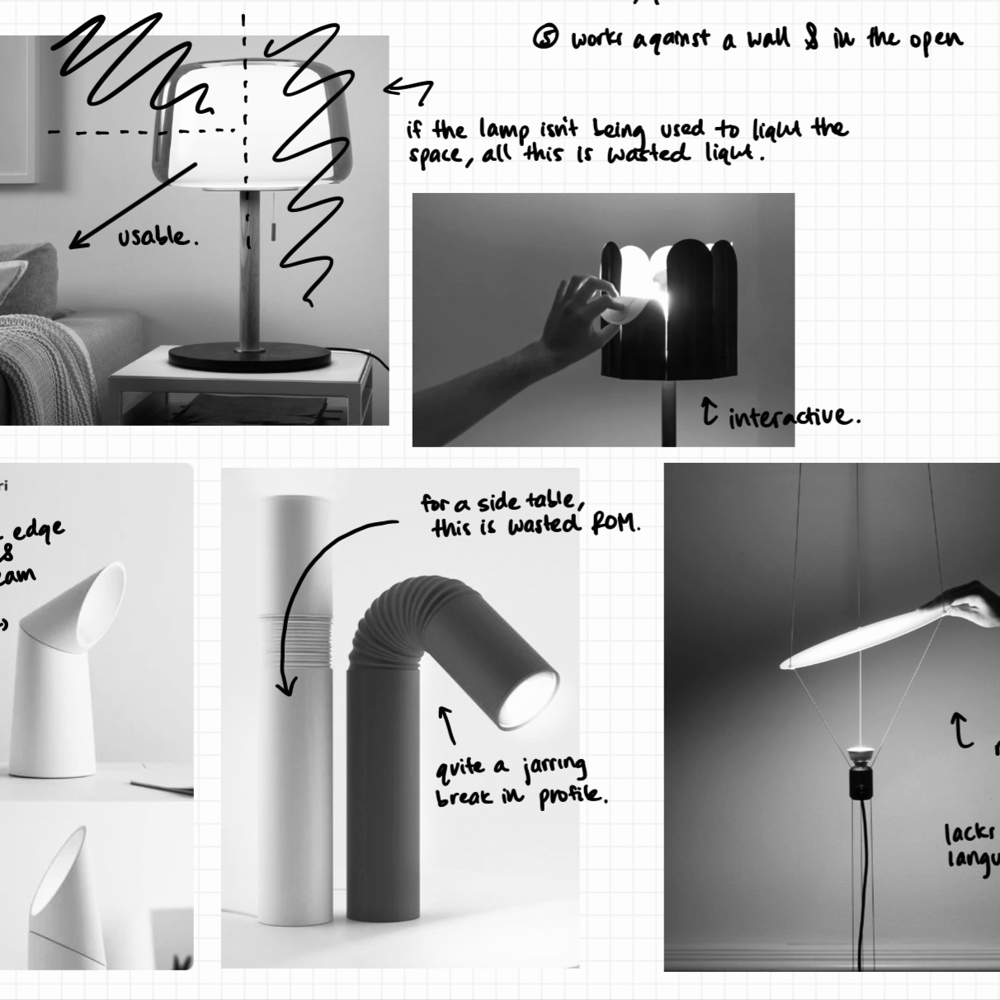
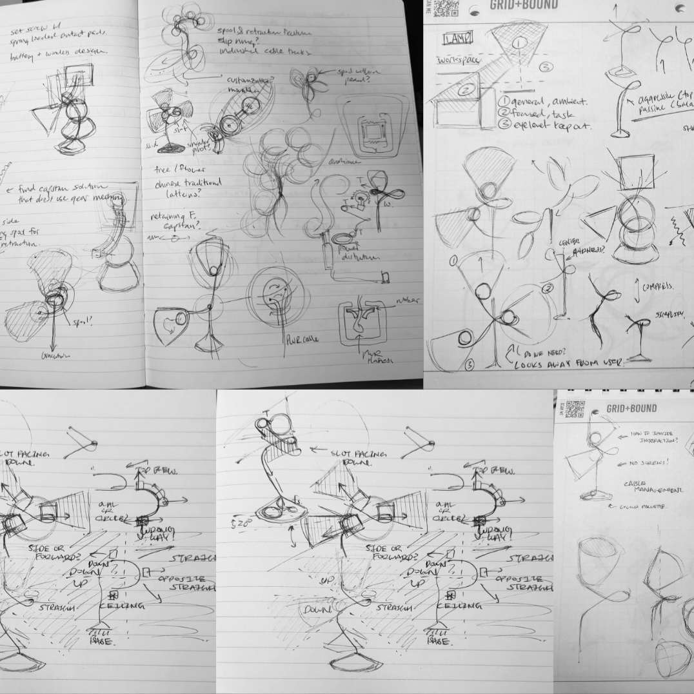
Shade Geometry
The shade is composed of two concentric spherical layers, each built from longitudinal slats. The inner layer remains fixed while the outer layer rotates and rises around it. The relative alignment of the two layers determines how much of the central light source is exposed. A slight moiré pattern also occurs as a result.
To explore the relationship between the number of slats, their offset, and the resulting light pattern, I built a simple interactive visualizer. Rather than optimizing for a single numerical solution, I used it to quickly explore different combinations and understand how small changes affected the appearance of the shade and the resulting light output.
The final design uses 17 inner slats, two additional slats in the outer layer, and a 90% opaque backing.
Front is fixed at 50% — closure depends on it.
Iteration
Most of the prototyping focused on the mechanism that converts rotation into the rising and relative motions of the inner and outer shade. I explored several approaches to guiding, supporting, and balancing the moving assembly, gradually removing mechanisms that added complexity without improving the interaction.
Mechanism
Lamp’s light mechanism moves up and down via a barrel cam mechanism. It holds its position due to the shallow lead angle, combined with two adjustable brake pads that lie in the base. To achieve the relative rotations of the inner and outer layers, there is a track along the outer surface that the outer shades rotate along. Wires for the LEDs are passed concentrically through the follower pin and terminate with a standard barrel jack connection. The entire assembly was built using Onshape.
A master sketch was used to base Lamp off real human ergonomics and design guidelines, accounting for dimensions such as the average side table height and eye level.
- Height
- 465 mm
- Range of Motion
- 107.5 mm
- Parts (Printed)
- 99
- Parts (Total)
- 164
- Light source
- LED
- Colour temp
- 3000K
Light
The changing light creates a dynamic, distinct visual experiences, from a soft ambient glow to shifting patterns of light and shadow, and finally a more direct light for focused tasks.
Colour & Finish
Unbuilt · renderedThe working prototype was entirely 3D-printed. I used PETG and polycarbonate for components near the LEDs, with PLA for the outer shades. 3D printing made it easy to experiment with the geometry and refine the design throughout prototyping.
I chose yellow to give the lamp a bit of personality and playfulness against its otherwise simple, symmetrical form. Pairing it with a warm off-white helped balance the colour and made the lamp feel more at home in a living space.
I also explored how different colours and materials could change the character of the lamp. The separation between the base and moving shade creates an opportunity to mix contrasting finishes, such as metal and wood. I'd especially like to explore wooden shades in a future version to bring more natural warmth to the design.
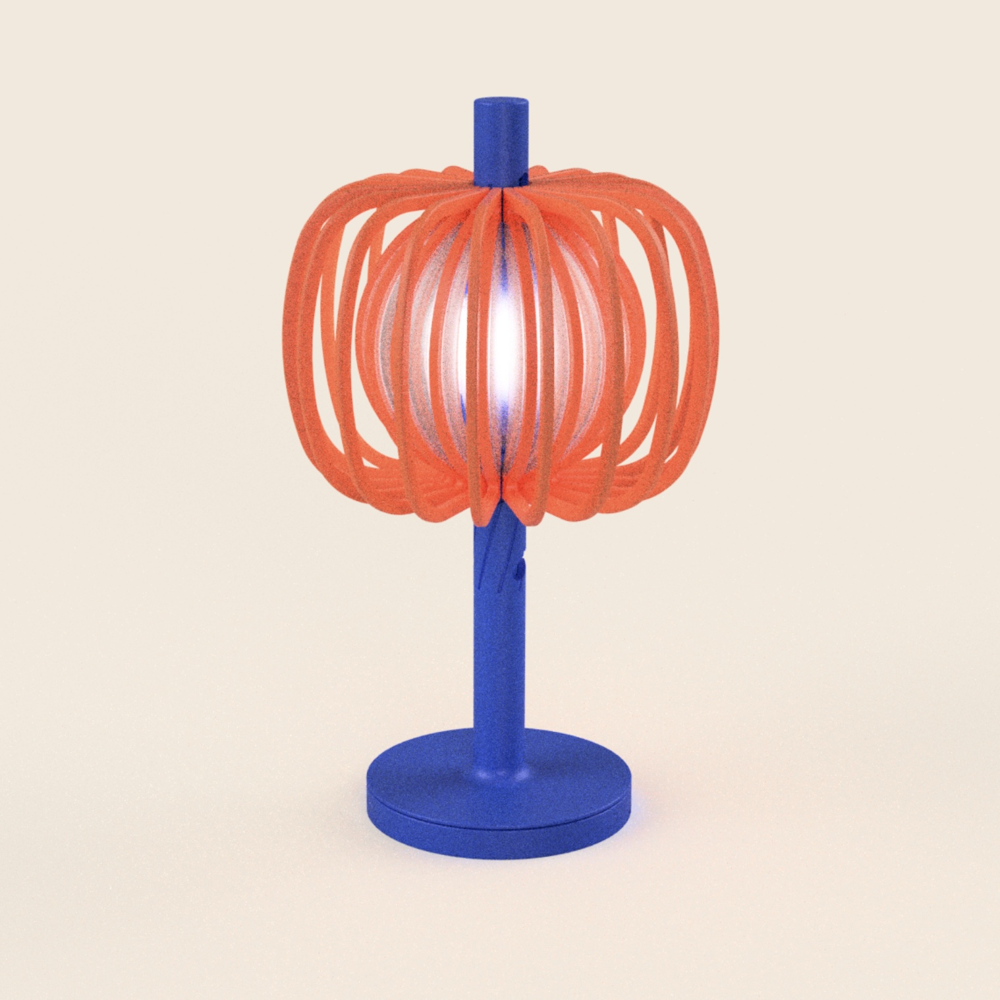
36 85 214
255 107 53
Matte plastic · matte plastic
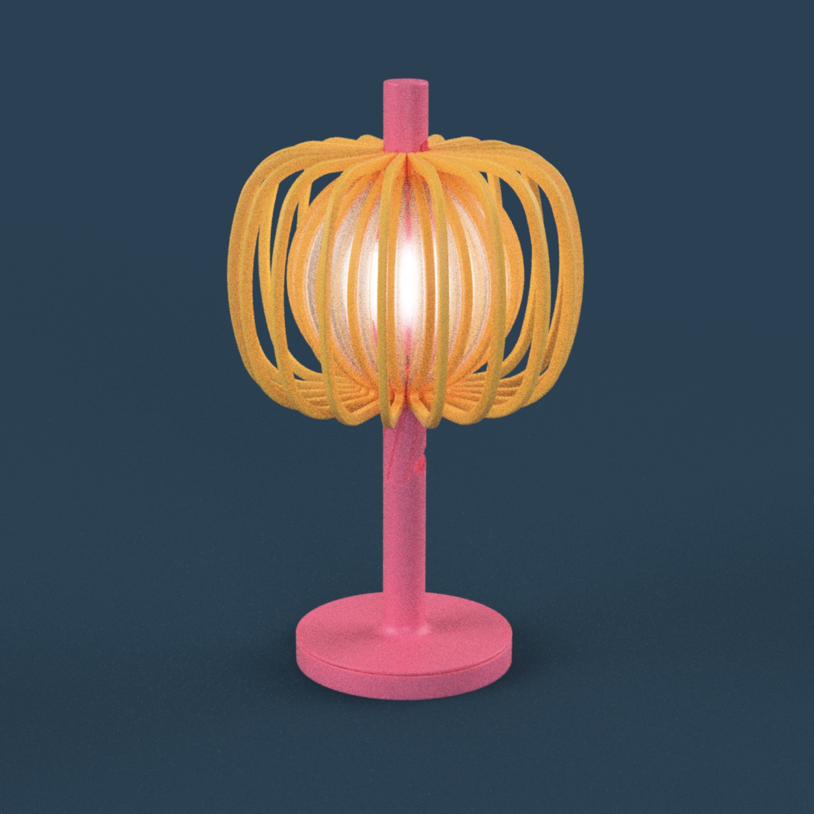
255 92 138
255 183 3
Matte plastic · matte plastic
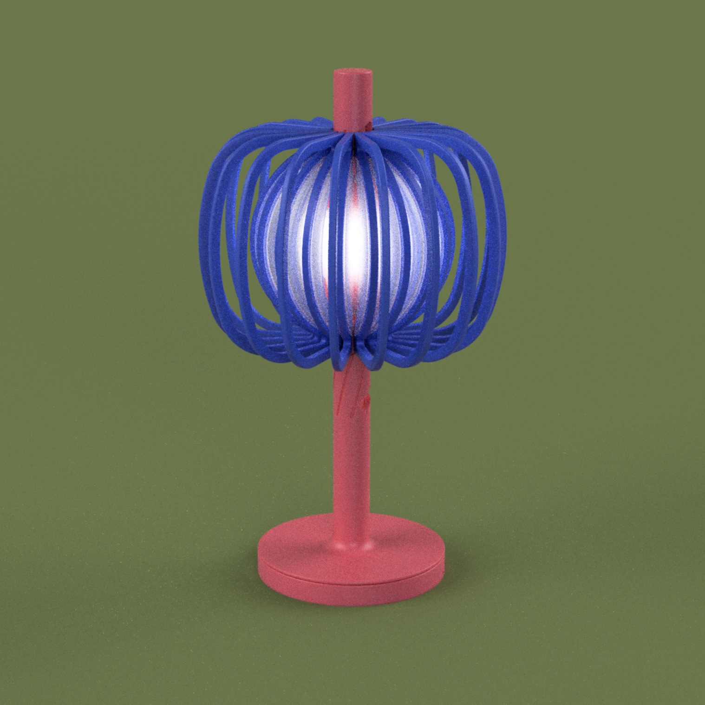
232 74 95
36 85 214
Matte plastic · matte plastic

108 74 182
247 201 72
Matte plastic · matte plastic
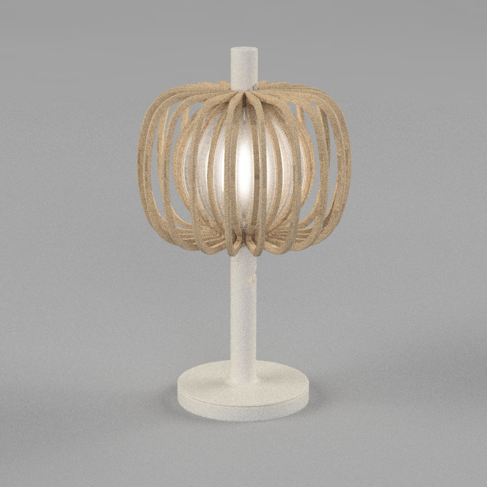
216 181 137
161 161 170
Natural wood · matte plastic
From interaction to mechanism to finish, Lamp was an exploration of making a complex idea feel simple.
In Retrospect
The working prototype brought together the interaction, shade geometry, and mechanism into a functional product. As my first venture into product design outside of robotics, the project taught me to think more about the user's experience — asking not just how something should work, but how it should feel to use. There are still a few areas I'd like to explore further.
- 01 — Refine the Mechanism Improve the fit, friction, and movement between components to make the interaction feel more effortless. I'd also like to simplify the tool-free assembly process.
- 02 — Develop the Lighting Experiment with brighter LEDs, different diffusers, and shade materials to improve glare control and light distribution across both lighting modes.
- 03 — Explore Production Materials Move beyond 3D printing to explore materials such as metal and wood, along with manufacturing processes that could improve durability, surface quality, and finish.
- 04 — Explore More Organic Forms Despite stepping away from robotics, I found myself gravitating toward symmetrical, CAD-driven forms. In future projects, I'd like to push beyond that familiarity and experiment with more organic shapes and surfacing techniques.
A simpler way to interact with light.